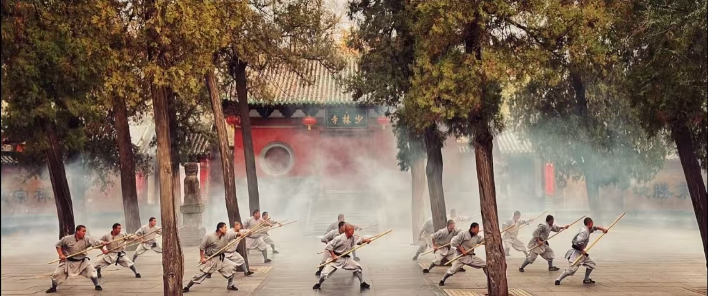
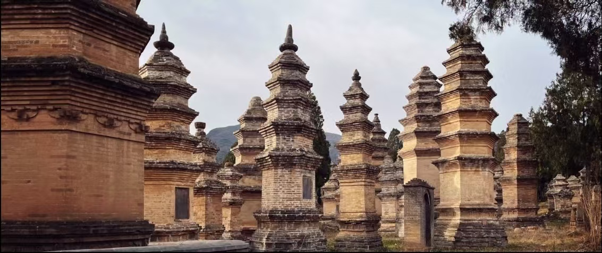

少林寺位于河南省郑州市登封市嵩山五乳峰下，始建于北魏太和十九年（495年），是中国佛教禅宗祖庭，也是少林功夫的发源地，素有“天下第一名刹”的美誉。
少林寺因坐落于嵩山腹地少室山茂密丛林之中得名，集禅、武、医、艺于一体，千年古刹气势恢宏，文化底蕴深厚，是中外游客向往的文化圣地。

📍 详细地址：河南省郑州市登封市嵩山少林风景区
🎫 门票参考：成人80元，包含常住院、塔林、武术表演、初祖庵等
⏰ 开放时间：07:30–18:00，表演时间以景区当日公告为准
🚗 交通方式
🍜 特色美食
1. 建议游玩时长：4–6小时，想玩三皇寨可安排一整天。
2. 景区山路较多，务必穿舒适运动鞋，注意安全。
3. 武术表演非常精彩，建议提前到场选好位置。
4. 寺内禁止大声喧哗、随意拍摄佛像，尊重宗教礼仪。
5. 景区香烛、纪念品价格较高，理性消费。
春季（3–5月）山花烂漫，气候宜人；秋季（9–11月）天高气爽，景色最美。夏季较热，冬季人少清静，可感受古刹禅意氛围。